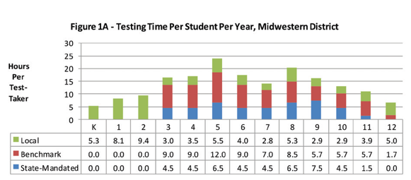
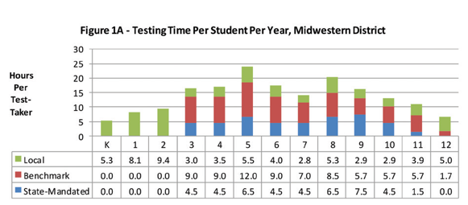
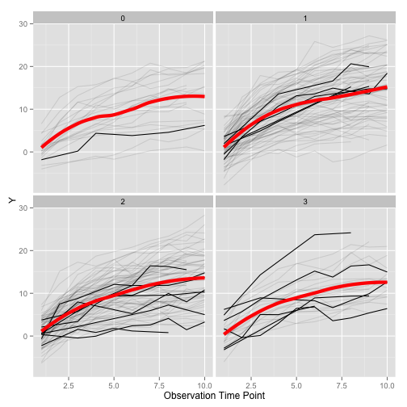

There were five Exabytes of information created between the dawn of civilization through 2003, but that much information is now created every two days, and the pace is increasing.
Then Google CEO Eric Schmidt in 2010
Daniel Anderson
There were five Exabytes of information created between the dawn of civilization through 2003, but that much information is now created every two days, and the pace is increasing.
Then Google CEO Eric Schmidt in 2010


https://blog.twitter.com/2015/usgs-twitter-data-earthquake-detection
 





Generally, the following should hold:
These terms are not universal, but are a good way to think about data.
"It is often said that 80% of data analysis is spent on the process of cleaning and preparing the data"
Hadley Wickham

Any ideas why this is messy?
| leaid | leaname | fips | stateabb | year | grade | mean_link_ela | se_link_ela | mean_link_math | se_link_math |
|---|---|---|---|---|---|---|---|---|---|
| 100002 | ALABAMA YOUTH SERVICES | 1 | AL | 2009 | 8 | 210.55 | 6.72 | 220.67 | 7.06 |
| 100002 | ALABAMA YOUTH SERVICES | 1 | AL | 2011 | 8 | 231.66 | 6.74 | NA | NA |
| 100002 | ALABAMA YOUTH SERVICES | 1 | AL | 2012 | 8 | 226.18 | 6.66 | 233.13 | 6.98 |
| 100005 | ALBERTVILLE CITY | 1 | AL | 2009 | 3 | 204.47 | 2.75 | 216.36 | 2.01 |
| 100005 | ALBERTVILLE CITY | 1 | AL | 2009 | 4 | 207.40 | 2.94 | 223.03 | 2.34 |
| 100005 | ALBERTVILLE CITY | 1 | AL | 2009 | 5 | 216.86 | 2.60 | 230.42 | 2.29 |
| mean_link_ela | se_link_ela | mean_link_math | se_link_math |
|---|---|---|---|
| 210.55 | 6.72 | 220.67 | 7.06 |
| 231.66 | 6.74 | NA | NA |
| 226.18 | 6.66 | 233.13 | 6.98 |
| 204.47 | 2.75 | 216.36 | 2.01 |
| 207.40 | 2.94 | 223.03 | 2.34 |
| 216.86 | 2.60 | 230.42 | 2.29 |
Problem? The column headers are values, not variables.
| leaid | leaname | fips | stateabb | year | grade | Subject | mean | se |
|---|---|---|---|---|---|---|---|---|
| 100002 | ALABAMA YOUTH SERVICES | 1 | AL | 2009 | 8 | ela | 210.5474 | 6.723581 |
| 100002 | ALABAMA YOUTH SERVICES | 1 | AL | 2011 | 8 | ela | 231.6601 | 6.741922 |
| 100002 | ALABAMA YOUTH SERVICES | 1 | AL | 2012 | 8 | ela | 226.1813 | 6.657756 |
| 100005 | ALBERTVILLE CITY | 1 | AL | 2009 | 3 | ela | 204.4659 | 2.747565 |
| 100005 | ALBERTVILLE CITY | 1 | AL | 2009 | 4 | ela | 207.4045 | 2.939638 |
| 100005 | ALBERTVILLE CITY | 1 | AL | 2009 | 5 | ela | 216.8594 | 2.599224 |
(from the JSS paper)
| religion | <$10k | $10-20k | $20-30k | $30-40k | $40-50k | $50-75k | $75-100k | $100-150k | >150k | Don't know/refused |
|---|---|---|---|---|---|---|---|---|---|---|
| Agnostic | 27 | 34 | 60 | 81 | 76 | 137 | 122 | 109 | 84 | 96 |
| Atheist | 12 | 27 | 37 | 52 | 35 | 70 | 73 | 59 | 74 | 76 |
| Buddhist | 27 | 21 | 30 | 34 | 33 | 58 | 62 | 39 | 53 | 54 |
| Catholic | 418 | 617 | 732 | 670 | 638 | 1116 | 949 | 792 | 633 | 1489 |
| Don’t know/refused | 15 | 14 | 15 | 11 | 10 | 35 | 21 | 17 | 18 | 116 |
| Evangelical Prot | 575 | 869 | 1064 | 982 | 881 | 1486 | 949 | 723 | 414 | 1529 |
| Hindu | 1 | 9 | 7 | 9 | 11 | 34 | 47 | 48 | 54 | 37 |
| Historically Black Prot | 228 | 244 | 236 | 238 | 197 | 223 | 131 | 81 | 78 | 339 |
| Jehovah's Witness | 20 | 27 | 24 | 24 | 21 | 30 | 15 | 11 | 6 | 37 |
| Jewish | 19 | 19 | 25 | 25 | 30 | 95 | 69 | 87 | 151 | 162 |
| Mainline Prot | 289 | 495 | 619 | 655 | 651 | 1107 | 939 | 753 | 634 | 1328 |
| Mormon | 29 | 40 | 48 | 51 | 56 | 112 | 85 | 49 | 42 | 69 |
| Muslim | 6 | 7 | 9 | 10 | 9 | 23 | 16 | 8 | 6 | 22 |
| Orthodox | 13 | 17 | 23 | 32 | 32 | 47 | 38 | 42 | 46 | 73 |
| Other Christian | 9 | 7 | 11 | 13 | 13 | 14 | 18 | 14 | 12 | 18 |
| Other Faiths | 20 | 33 | 40 | 46 | 49 | 63 | 46 | 40 | 41 | 71 |
| Other World Religions | 5 | 2 | 3 | 4 | 2 | 7 | 3 | 4 | 4 | 8 |
| Unaffiliated | 217 | 299 | 374 | 365 | 341 | 528 | 407 | 321 | 258 | 597 |
| religion | income | freq |
|---|---|---|
| Agnostic | <$10k | 27 |
| Agnostic | $10-20k | 34 |
| Agnostic | $20-30k | 60 |
| Agnostic | $30-40k | 81 |
| Agnostic | $40-50k | 76 |
| Agnostic | $50-75k | 137 |
| Agnostic | $75-100k | 122 |
| Agnostic | $100-150k | 109 |
| Agnostic | >150k | 84 |
| Agnostic | Don't know/refused | 96 |
| Atheist | <$10k | 12 |
| Atheist | $10-20k | 27 |
| country | year | m014 | m1524 | m2534 | m3544 | m4554 | mu | f014 | f1524 | f2534 | f3544 | f4554 |
|---|---|---|---|---|---|---|---|---|---|---|---|---|
| AD | 2000 | 0 | 0 | 1 | 0 | 0 | ||||||
| AE | 2000 | 2 | 4 | 4 | 6 | 5 | 3 | 16 | 1 | 3 | 0 | |
| AF | 2000 | 52 | 228 | 183 | 149 | 129 | 93 | 414 | 565 | 339 | 205 | |
| AG | 2000 | 0 | 0 | 0 | 0 | 0 | 1 | 1 | 1 | 0 | 0 | |
| AL | 2000 | 2 | 19 | 21 | 14 | 24 | 3 | 11 | 10 | 8 | 8 | |
| AM | 2000 | 2 | 152 | 130 | 131 | 63 | 1 | 24 | 27 | 24 | 8 | |
| AN | 2000 | 0 | 0 | 1 | 2 | 0 | 0 | 0 | 1 | 0 | 0 | |
| AO | 2000 | 186 | 999 | 1003 | 912 | 482 | 247 | 1142 | 1091 | 844 | 417 | |
| AR | 2000 | 97 | 278 | 594 | 402 | 419 | 121 | 544 | 479 | 262 | 230 | |
| AS | 2000 | 1 | 1 |
In this example, M indicates if the data came from a male, while F indicates female. The subsequent numbers represent the age range. Tidying these data will be a two step process.
| country | year | variable | cases |
|---|---|---|---|
| AD | 2000 | m014 | 0 |
| AE | 2000 | m014 | 2 |
| AF | 2000 | m014 | 52 |
| AG | 2000 | m014 | 0 |
| AL | 2000 | m014 | 2 |
| AM | 2000 | m014 | 2 |
| AN | 2000 | m014 | 0 |
| AO | 2000 | m014 | 186 |
| AR | 2000 | m014 | 97 |
| AS | 2000 | m014 | NA |
Notice this is much closer to what we want, but we have a problem now in that we have two variables stored in one column.
| country | year | sex | age_range | cases |
|---|---|---|---|---|
| AD | 2000 | m | 0-14 | 0 |
| AD | 2000 | m | 15-24 | 0 |
| AD | 2000 | m | 25-34 | 1 |
| AD | 2000 | m | 35-44 | 0 |
| AD | 2000 | m | 45-54 | 0 |
| AD | 2000 | m | 55-64 | 0 |
| AD | 2000 | m | 65+ | 0 |
| AE | 2000 | m | 0-14 | 2 |
| AE | 2000 | m | 15-24 | 4 |
| AE | 2000 | m | 25-34 | 4 |
| id | year | month | element | d1 | d2 | d3 | d4 | d5 | d6 | d7 | d8 |
|---|---|---|---|---|---|---|---|---|---|---|---|
| MX17004 | 2010 | 1 | tmax | ||||||||
| MX17004 | 2010 | 1 | tmin | ||||||||
| MX17004 | 2010 | 2 | tmax | 27.3 | 24.1 | ||||||
| MX17004 | 2010 | 2 | tmin | 14.4 | 14.4 | ||||||
| MX17004 | 2010 | 3 | tmax | 32.1 | |||||||
| MX17004 | 2010 | 3 | tmin | 14.2 | |||||||
| MX17004 | 2010 | 4 | tmax | ||||||||
| MX17004 | 2010 | 4 | tmin | ||||||||
| MX17004 | 2010 | 5 | tmax | ||||||||
| MX17004 | 2010 | 5 | tmin |
| id | year | month | element | day_key | value |
|---|---|---|---|---|---|
| MX17004 | 2010 | 1 | tmax | d30 | 27.8 |
| MX17004 | 2010 | 1 | tmin | d30 | 14.5 |
| MX17004 | 2010 | 2 | tmax | d2 | 27.3 |
| MX17004 | 2010 | 2 | tmin | d2 | 14.4 |
| MX17004 | 2010 | 2 | tmax | d3 | 24.1 |
| MX17004 | 2010 | 2 | tmin | d3 | 14.4 |
| MX17004 | 2010 | 2 | tmax | d11 | 29.7 |
| MX17004 | 2010 | 2 | tmin | d11 | 13.4 |
| MX17004 | 2010 | 2 | tmax | d23 | 29.9 |
| MX17004 | 2010 | 2 | tmin | d23 | 10.7 |
| id | date | tmax | tmin |
|---|---|---|---|
| MX17004 | 2010-01-01 | 27.8 | 14.5 |
| MX17004 | 2010-02-02 | 29.7 | 13.4 |
| MX17004 | 2010-02-02 | 27.3 | 14.4 |
| MX17004 | 2010-02-02 | 29.9 | 10.7 |
| MX17004 | 2010-02-02 | 24.1 | 14.4 |
| MX17004 | 2010-03-03 | 34.5 | 16.8 |
| MX17004 | 2010-03-03 | 31.1 | 17.6 |
| MX17004 | 2010-03-03 | 32.1 | 14.2 |
| MX17004 | 2010-04-04 | 36.3 | 16.7 |
| MX17004 | 2010-05-05 | 33.2 | 18.2 |


| sid | tid | scid | tag | sped | frl | male | disability | ethnicity | grade | score |
|---|---|---|---|---|---|---|---|---|---|---|
| 1 | 1 | 1 | 0 | 0 | 0 | 0 | ed | white | 6 | 217.1298 |
| 1 | 1 | 1 | 0 | 0 | 0 | 0 | ed | white | 7 | 218.0389 |
| 1 | 1 | 1 | 0 | 0 | 0 | 0 | ed | white | 8 | 223.3295 |
| 2 | 1 | 1 | 0 | 0 | 0 | 0 | none | white | 6 | 191.8206 |
| 2 | 1 | 1 | 0 | 0 | 0 | 0 | none | white | 7 | 203.2515 |
| 2 | 1 | 1 | 0 | 0 | 0 | 0 | none | white | 8 | 200.2320 |
NOTE: If you need help with either of the above, please contact me. I'd like everybody to be ready to go before we need to use it. Best to get it installed now and make sure it's working so we can troubleshoot if not.